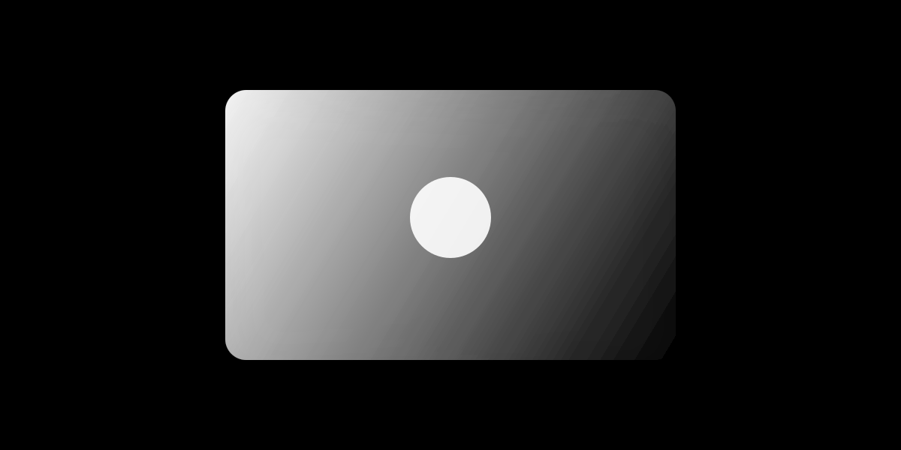

A portfolio of signature commercial, residential, and infrastructure projects defined by quality, innovation, and trust.

In Progress
Civil
Harbour Bridge Upgrade
A major structural reinforcement and expansion project on the city's main harbour crossing. Works include deck resurfacing, cable tensioning, and installation of LED lighting systems along a 1.2 km span.
In Progress
Commercial
Meridian Commerce Tower
A 22-storey commercial office building featuring a glass curtain wall façade, underground carpark, and NABERS 5-star energy rating. Structure is currently at Level 14 with completion expected Q3.
In Progress
Civil
Northern Arterial Road Widening
Widening 8.5 km of the Northern Arterial Road from two lanes to four, including new median barriers, drainage upgrades, and smart traffic signal integration across 11 intersections.